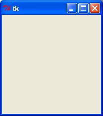

Python GUI Programming (Tkinter)
Python provides various options for developing graphical user interfaces (GUIs). Most important are listed below:
Tkinter: Tkinter is the Python interface to the Tk GUI toolkit shipped with Python. We would look this option in this tutorial.
wxPython: This is an open-source Python interface for wxWindows http://wxpython.org.
JPython: JPython is a Python port for Java, which gives Python scripts seamless access to Java class libraries on the local machine http://www.jython.org.
There are many other interfaces available which I'm not listing here. You can find them over the net.
Tkinter Programming
Tkinter is the standard GUI library for Python. Python when combined with Tkinter provides a fast and easy way to create GUI applications. Tkinter provides a powerful object-oriented interface to the Tk GUI toolkit.
Creating a GUI application using Tkinter is an easy task. All you need to do is perform the following steps:
Import the Tkinter module.
Create the GUI application main window.
Add one or more of the above mentioned widgets to the GUI application.
Enter the main event loop to take action against each event triggered by the user.
Example:
#!/usr/bin/python import Tkinter top = Tkinter.Tk() # Code to add widgets will go here... top.mainloop()
This would create a following window:
Tkinter Widgets
Tkinter provides various controls, such as buttons, labels, and text boxes, used in a GUI application. These controls are commonly called widgets.
There are currently 15 types of widgets in Tkinter. We present these widgets as well as a brief description in the following table:
| Operator | Description |
|---|---|
| Button | The Button widget is used to display buttons in your application. |
| Canvas | The Canvas widget is used to draw shapes, such as lines, ovals, polygons, and rectangles, in your application. |
| Checkbutton | The Checkbutton widget is used to display a number of options as checkboxes. The user can select multiple options at a time. |
| Entry | The Entry widget is used to display a single-line text field for accepting values from a user. |
| Frame | The Frame widget is used as a container widget to organize other widgets. |
| Label | The Label widget is used to provide a single-line caption for other widgets. It can also contain images. |
| Listbox | The Listbox widget is used to provide a list of options to a user. |
| Menubutton | The Menubutton widget is used to display menus in your application. |
| Menu | The Menu widget is used to provide various commands to a user. These commands are contained inside Menubutton. |
| Message | The Message widget is used to display multiline text fields for accepting values from a user. |
| Radiobutton | The Radiobutton widget is used to display a number of options as radio buttons. The user can select only one option at a time. |
| Scale | The Scale widget is used to provide a slider widget. |
| Scrollbar | The Scrollbar widget is used to add scrolling capability to various widgets, such as list boxes. |
| Text | The Text widget is used to display text in multiple lines. |
| Toplevel | The Toplevel widget is used to provide a separate window container. |
| Spinbox | The Spinbox widget is a variant of the standard Tkinter Entry widget, which can be used to select from a fixed number of values. |
| PanedWindow | A PanedWindow is a container widget that may contain any number of panes, arranged horizontally or vertically. |
| LabelFrame | A labelframe is a simple container widget. Its primary purpose is to act as a spacer or container for complex window layouts. |
| tkMessageBox | This module is used to display message boxes in your applications. |
Standard attributes:
Let's take a look at how some of their common attributes.such as sizes, colors and fonts are specified.
Geometry Management:
All Tkinter widgets have access to specific geometry management methods, which have the purpose of organizing widgets throughout the parent widget area. Tkinter exposes the following geometry manager classes: pack, grid, and place.
The pack() Method - This geometry manager organizes widgets in blocks before placing them in the parent widget.
The grid() Method - This geometry manager organizes widgets in a table-like structure in the parent widget.
The place() Method -This geometry manager organizes widgets by placing them in a specific position in the parent widget.